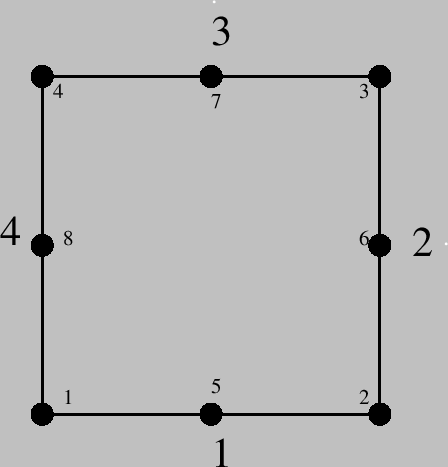
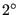
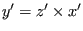
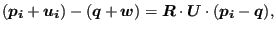
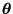
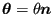

Keyword type: step
This option is used to save selected element variables averaged at the nodal points in a frd file (extension .frd) for subsequent viewing by CalculiX GraphiX. The following element variables can be selected (the label is square brackets [] is the one used in the .frd file; for frequency calculations with cyclic symmetry both a real and an imaginary part may be stored, in all other cases only the real part is stored):
The selected variables are stored for the complete model. Due to the averaging process jumps at material interfaces are smeared out unless you model the materials on both sides of the interface independently and connect the coinciding nodes with MPC's.
For frequency calculations with cyclic symmetry the eigenmodes are generated in pairs (different by a phase shift of 90 degrees). Only the first one of each pair is stored in the frd file. If S is selected (the stresses) two load cases are stored in the frd file: a loadcase labeled STRESS containing the real part of the stresses and a loadcase labeled STRESSI containing the imaginary part of the stresses. For all other variables only the real part is stored.
The key ENER triggers the calculation of the internal energy. If it is absent no internal energy is calculated. Since in nonlinear calculations the internal energy at any time depends on the accumulated energy at all previous times, the selection of ENER in nonlinear calculations (geometric or material nonlinearities) must be made in the first step.
The first occurrence of an *EL FILE keyword card within a step wipes out all previous element variable selections for file output. If no *EL FILE card is used within a step the selections of the previous step apply. If there is no previous step, no element variables will be stored.
There are nine optional parameters: FREQUENCY, FREQUENCYF, GLOBAL, OUTPUT, SECTION FORCES, TIME POINTS, NSET, LAST ITERATIONS and CONTACT ELEMENTS. The parameters FREQUENCY and TIME POINTS are mutually exclusive.
FREQUENCY applies to nonlinear calculations where a step can consist of several increments. Default is FREQUENCY=1, which indicates that the results of all increments will be stored. FREQUENCY=N with N an integer indicates that the results of every Nth increment will be stored. The final results of a step are always stored. If you only want the final results, choose N very big. The value of N applies to *OUTPUT,*ELEMENT OUTPUT, *EL FILE, *ELPRINT, *NODE OUTPUT, *NODE FILE, *NODE PRINT, *SECTION PRINT ,*CONTACT OUTPUT, *CONTACT FILE and *CONTACT PRINT. If the FREQUENCY parameter is used for more than one of these keywords with conflicting values of N, the last value applies to all. A frequency parameter stays active across several steps until it is overwritten by another FREQUENCY value or the TIME POINTS parameter.
The 3D fluid analogue of FREQUENCY is FREQUENCYF. In coupled calculations FREQUENCY applies to the thermomechanical output, FREQUENCYF to the 3D fluid output.
With the parameter GLOBAL you tell the program whether you would like the results in the global rectangular coordinate system or in the local element system. If an *ORIENTATION card is applied to the element at stake, this card defines the local system. If no *ORIENTATION card is applied to the element, the local system coincides with the global rectangular system. Default value for the GLOBAL parameter is GLOBAL=YES, which means that the results are stored in the global system. If you prefer the results in the local system, specify GLOBAL=NO.
The parameter OUTPUT can take the value 2D or 3D. This has only effect for 1d and 2d elements such as beams, shells, plane stress, plane strain and axisymmetric elements AND provided it is used in the first step. If OUTPUT=3D, the 1d and 2d elements are stored in their expanded three-dimensional form. In particular, the user has the advantage to see his/her 1d/2d elements with their real thickness dimensions. However, the node numbers are new and do not relate to the node numbers in the input deck. Once selected, this parameter is active in the complete calculation. If OUTPUT=2D the fields in the expanded elements are averaged to obtain the values in the nodes of the original 1d and 2d elements. In particular, averaging removes the bending stresses in beams and shells. Therefore, default for beams and shells is OUTPUT=3D, for plane stress, plane strain and axisymmetric elements it is OUTPUT=2D. If OUTPUT=3D is selected, the parameter NSET is deactivated.
The selection of SECTION FORCES makes sense for beam elements only. Furthermore, SECTION FORCES and OUTPUT=3D are mutually exclusive (if both are used the last prevails). If selected, the stresses in the beam nodes are replaced by the section forces. They are calculated in a local coordinate system consisting of the 1-direction , the 2-direction  and 3-direction or tangential direction  (Figure 78). Accordingly, the stress components now have the following meaning:
For all elements except the beam elements the parameter SECTION FORCES has no effect. If SECTION FORCES is not selected the stress tensor is averaged across the beam section.
With the parameter TIME POINTS a time point sequence can be referenced, defined by a *TIME POINTS keyword. In that case, output will be provided for all time points of the sequence within the step and additionally at the end of the step. No other output will be stored and the FREQUENCY parameter is not taken into account. Within a step only one time point sequence can be active. If more than one is specified, the last one defined on any of the keyword cards *NODE FILE, *EL FILE, *NODE PRINT or *EL PRINT will be active. The TIME POINTS option should not be used together with the DIRECT option on the procedure card. The TIME POINTS parameters stays active across several steps until it is replaced by another TIME POINTS value or the FREQUENCY parameter.
The specification of a node set with the parameter NSET limits the output to the nodes contained in the set. Remember that the frd file is node based, so element results are also stored at the nodes after extrapolation from the integration points. For cyclic symmetric structures the usage of the parameter NGRAPH on the *CYCLIC SYMMETRY MODEL card leads to output of the results not only for the node set specified by the user (which naturally belongs to the base sector) but also for all corresponding nodes of the sectors generated by the NGRAPH parameter. Notice that for cyclic symmetric structures in modal dynamic and steady state dynamics calculations the use of NSET is mandatory. In that case the stresses will only be correct at those nodes belonging to elements for which ALL nodal displacements were requested (e.g. by a *NODE FILE card).
The parameter LAST ITERATIONS leads to the storage of the displacements in all iterations of the last increment in a file with name ResultsForLastIterations.frd (can be opened with CalculiX GraphiX). This is useful for debugging purposes in case of divergence. No such file is created if this parameter is absent.
Finally, the parameter CONTACT ELEMENTS stores the contact elements which have been generated in each iteration in a file with the name jobname.cel. When opening the frd file with CalculiX GraphiX these files can be read with the command ``read jobname.cel inp'' and visualized by plotting the elements in the sets contactelements_st_in_at_it, where is the step number, the increment number, the attempt number and the iteration number.
Starting with version 2.14 of CalculiX the selection of ``S'' (stress) automatically triggers the output the stress error estimator ``ERR'' as well. This can only be avoided by selecting NOE in a position after S (either immediately following S, or with some other output requests in between, irrespective whether these output requests are on the same keyword card or on different keyword cards).
First line:
Example: *EL FILE S,PEEQ
requests that the (Cauchy) stresses and the equivalent plastic strain is stored in .frd format for subsequent viewing with CalculiX GraphiX.
Example files: beamt, fullseg, segment1, segdyn.